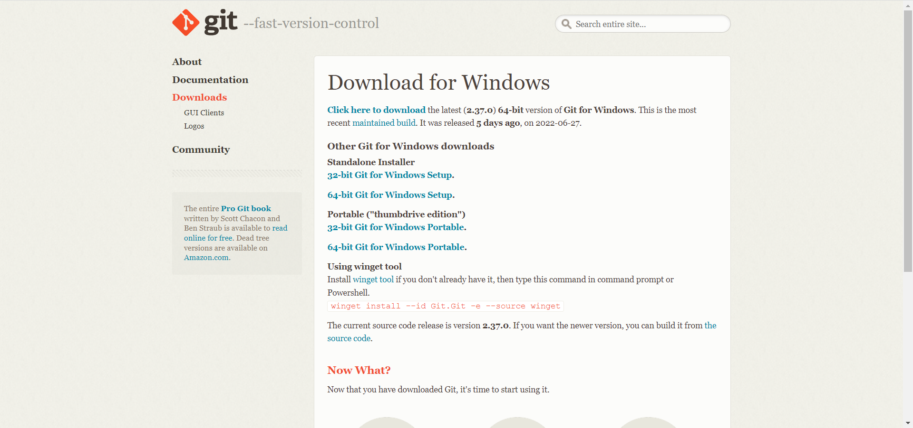
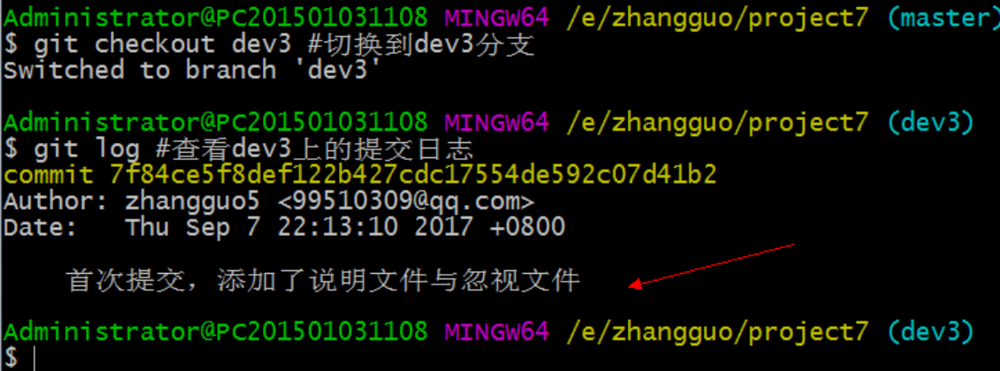
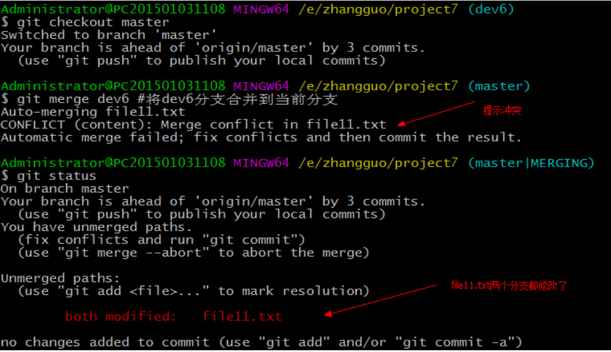
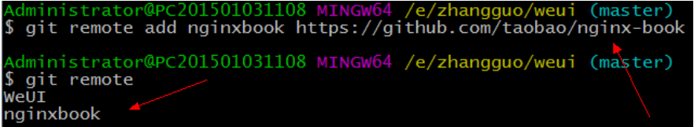

Git 历史
历史使人明智，当我们谈论到某一个伟大的工具的时候，当然是少不了去了解它的历史；只有我们清楚地明白到它是为了解决什么样的问题而产生的，我们才能够更好地去学习了解使用它；
1、git是由谁发明的？
答: git是由Linus发明的，基于C语言的；
2、在当时是为了解决什么样的历史问题？
答: 谈及这个问题就不得不提起另一个伟大的工具linux，在2002年以前呀，这个工具的维护研发是由世界各地的程序员共同参与的，他们写出来的代码全部都交给Linus去合并的 如下图：

时间节点来到了2002年，这时候经过了十多年的发展参与的人是越来越多了，而一个人合并难以避免的就是效率低这也直接引起了维护者们的不满；
其实在当时已经存在一些版本控制的工具的了，像cvs，svn等，但是这些工具都是要收费的，而且使用的还是集中式版本管理方式。这就受到了Linus的唾弃；
后来Linus选择了BitKeeper分布式版本控制工具作为他们的版本管理工具，这个系统的研发公司也是出于人道博爱的精神给他们免费使用了；
大家都知道linux系统是很牛逼的，所以能参与维护的都不是一般的攻城狮呀，有一天团队里面的一个人就想着破解BitKeeper的协议呀，当时也是被它的研发公司发现了，他们就骂骂咧咧地收回了给他们的使用权；之后就是Linus被迫自己花了半个月时间用C写了git这个伟大的分布式版本控制工具了；
所以Git的产生就是为了解决团队开发效率问题以及开发版本的管理的
3、第二个问题提到的分布式和集中式有什么区别？
目前市场上有两种版本控制：集中式和分布式
集中式：拥有一台中央处理服务器，版本库是集中放在中央服务器的，而干活的时候，用的都是自己的电脑，所以首先要从中央服务器哪里得到最新的版本，改完再推回去；所以集中式版本控制系统是必须联网才能工作。
这种做法带来了许多好处，每个人都可以在一定程度上看到项目中的其他人正在做些什 么。而管理员也可以轻松掌控每个开发者的权限，并且管理一个集中化的版本控制系统，要远比在各个客户端上维护本地数据库来得轻松容易。
事分两面，有好有坏。这么做显而易见的缺点是中央服务器的单点故障。如果服务器宕机一小时，那么在这一小时内，谁都无法提交更新，也就无法协同工作
并不是说服务器故障了就没有办法写代码了，只是在服务器故障的情况下，编写的 代码是没有办法得到保障的。试想 svn 中央服务器挂机一天。你还拼命写了一天代码，其中 12 点之前的代码都是高质量可靠的，而且有很多闪光点。而 12 点之后的代码由于你想尝试一个比较大胆的想法，将代码改的面目全非了。这样下来你 12 点之前做的工作也都白费了，有记录的版本只能是 svn 服务器挂掉时保存的版本！
要是中央服务器的磁盘发生故障，碰巧没做备份，或者备份不够及时，就会有丢失数据的风险。最坏的情况是彻底丢失整个项目的所有历史更改记录，而被客户端偶然提取出来的保存在本地的某些快照数据，就成了恢复数据的希望。但这样的话依然是个问题，你不能保证所有的数据都已经有人事先完整提取出来过。 只要整个项目的历史记录被保存在单一位置，就有丢失所有历史更新记录的风险。
分布式：去中心化，没有中央处理服务器，每个人的电脑都是完整的一个版本库，每个电脑都是独立连接的；因为版本都是在自己的电脑上，工作的时候就不需要联网了。
客户端并不只提取最新版本的文件快照，而是把代码仓库完整地镜像下来。这么一来，任何一处协同工作用的服务器发生故障，事后都可以用任何一个镜像出来的本地仓库恢复。因为每一次的提取操作，实际上都是一次对代码仓库的完整备份
更进一步，许多这类系统都可以指定和若干不同的远端代码仓库进行交互。籍此，你就可以在同一个项目中分别和不同工作小组的人相互协作。 分布式的版本控制系统在管理项目时 存放的不是项目版本与版本之间 的差异.它存的是索引 （所需磁盘空间很少，所以每个客户端都可以放下整个项目的历史记录）
分布式的版本控制系统出现之后，解决了集中式版本控制系统的缺陷：
- 断网的情况下也可以进行开发 （因为版本控制是在本地进行的）
- 使用 github 进行团队协作，哪怕 github 挂了，每个客户端保存的也都是整个完整的项目(包含历史记录，更加安全）
Git 简介
Git是目前世界上最先进的分布式版本控制系统，是一款免费、开源的分布式版本控制系统，用于敏捷高效地处理任何或小或大的项目。
Git是一个开源的分布式版本控制系统，可以有效、高速的处理从很小到非常大的项目版本管理。
Git 是 Linus Torvalds 为了帮助管理 Linux 内核开发而开发的一个开放源码的版本控制软件。
Git 特点
-
Git易于学习，占地面积小，性能极快。
-
它具有廉价的本地库，方便的暂存区域和多个工作，流分支等特性。
-
适合分布式开发，强调个体；
-
任意两个开发者之间可以很容易的解决冲突；
-
离线工作。
缺点：
- 代码保密性差，一旦开发者把整个库克隆下来就可以完全公开所有代码和版本信息；
- 权限控制不友好；如果需要对开发者限制各种权限的建议使用SVN。
何为版本控制
版本控制（Revision control）是一种在开发的过程中用于管理我们对文件、目录或工程等内容的修改历史，方便查看更改历史记录，备份以便恢复以前的版本的软件工程技术。
- 实现跨区域多人协同开发
- 追踪和记载一个或者多个文件的历史记录
- 组织和保护你的源代码和文档
- 统计工作量
- 并行开发、提高开发效率
- 跟踪记录整个软件的开发过程
- 减轻开发人员的负担，节省时间，同时降低人为错误
简单说就是用于管理多人协同开发项目的技术。
没有进行版本控制或者版本控制本身缺乏正确的流程管理，在软件开发过程中将会引入很多问题，如软件代码的一致性、软件内容的冗余、软件过程的事物性、软件开发过程中的并发性、软件源代码的安全性，以及软件的整合等问题。
常用术语
1、仓库（Repository）
受版本控制的所有文件修订历史的共享数据库
2、工作空间（Workspace)
本地硬盘或Unix 用户帐户上编辑的文件副本
3、工作树/区（Working tree）
工作区中包含了仓库的工作文件。您可以修改的内容和提交更改作为新的提交到仓库。
4、暂存区（Staging area）
暂存区是工作区用来提交更改（commit）前可以暂存工作区的变化。
5、索引（Index）
索引是暂存区的另一种术语。
6、签入（Checkin）
将新版本复制回仓库
7、签出（Checkout）
从仓库中将文件的最新修订版本复制到工作空间
8、提交（Commit）
对各自文件的工作副本做了更改，并将这些更改提交到仓库
9、冲突（Conflict）
多人对同一文件的工作副本进行更改，并将这些更改提交到仓库
10、合并（Merge）
将某分支上的更改联接到此主干或同为主干的另一个分支
11、分支（Branch）
从主线上分离开的副本，默认分支叫master
12、锁（Lock）
获得修改文件的专有权限。
13、头（HEAD）
头是一个象征性的参考，最常用以指向当前选择的分支。
14、修订（Revision）
表示代码的一个版本状态。Git通过用SHA1 hash算法表示的ID来标识不同的版本。
15、标记（Tags）
标记指的是某个分支某个特定时间点的状态。通过标记，可以很方便的切换到标记时的状态。
Git 安装
源码： https://github.com/git/git/
搭建 Git工作环境
打开 Git官网，下载git对应操作系统的版本。
选择版本：

安装
选择 Git安装位置，要求是非中文并且没有空格的目录，然后下一步。
Git选项配置，推荐默认设置，然后下一步。
Git安装目录名，不用修改，直接点击下一步。
Git的默认编辑器，建议使用默认的 Vim编辑器，然后点击下一步。

默认分支名设置，选择让 Git决定，分支名默认为 master，下一步。
修改 Git的环境变量，选第一个，不修改环境变量，只在 Git Bash里使用 Git。
选择后台客户端连接协议，选默认值 OpenSSL，然后下一步。
配置 Git文件的行末换行符，Windows使用 CRLF，Linux使用 LF，选择第一个自动 转换，然后继续下一步。
选择 Git终端类型，选择默认的 Git Bash终端，然后继续下一步。
选择 Git pull合并的模式，选择默认，然后下一步。
选择 Git的凭据管理器，选择默认的跨平台的凭据管理器，然后下一步。
其他配置，选择默认设置，然后下一步。
实验室功能，技术还不成熟，有已知的 bug，不要勾选，然后点击右下角的 Install 按钮，开始安装 Git。
点击 Finsh按钮，Git安装成功！
启动 Git
安装完毕右键桌面即可看到Git图标，或者点击开始菜单栏
Git Bash： Unix与Linux风格的命令行，使用最多，推荐最多
与DOS风格的命令有些区别，不习惯可以选择Git CMD
Git CMD： Windows风格的命令行
**Git GUI：**图形界面的Git，不建议初学者使用，尽量先熟悉常用命令
点击Create New Repository可以直接创建一个新的仓库。
Bash 基本命令
1、cd : 改变目录。
2、cd . . 回退到上一个目录，直接cd进入默认目录
3、pwd : 显示当前所在的目录路径。
4、ls(ll): 都是列出当前目录中的所有文件，只不过ll(两个ll)列出的内容更为详细。
5、touch : 新建一个文件 如 touch index.js 就会在当前目录下新建一个index.js文件。
6、rm: 删除一个文件, rm index.js 就会把index.js文件删除。
7、mkdir: 新建一个目录,就是新建一个文件夹。
8、rm -r : 删除一个文件夹, rm -r src 删除src目录， 好像不能用通配符。
9、mv 移动文件, mv index.html src index.html 是我们要移动的文件, src 是目标文件夹,当然, 这样写,必须保证文件和目标文件夹在同一目录下。
10、reset 重新初始化终端/清屏。
11、clear 清屏。
12、history 查看命令历史。
13、help 帮助。
14、exit 退出。
15、#表示注释
Git 常见命令

为了方便查找，做了如下细化和分类
专用名词：
master: 默认开发分支origin: 默认远程版本库Index / Stage：暂存区Workspace：工作区Repository：仓库区（或本地仓库）Remote：远程仓库
新建代码库
git init: 在当前目录新建一个代码仓库
git init [project-name]: 新建一个目录，把它初始化为git代码仓库
git clone [url]: 下载一个项目和它整个代码的历史，即从远程把仓库复制一份到本地，克隆后会创建一个新的本地仓库
配置类命令
git config --list:查看git配置
git config -e [--global]:编辑git配置文件
git config [--global] user.name "用户名":设置[全局]配置用户名
git config [--global] user.password "密码":设置[全局]配置密码
git config [--global] user.email"邮箱":重新全局配置邮箱
ssh-keygen:生成ssh 公钥
修改类命令
git status:查看当前工作区的状态
git diff -- fileName:命令可以查看工作区和版本库里面最新版本的区别
git add [file1] [file2]: 添加文件到暂存区
git add dir: 添加文件目录到暂存区
git add .: 添加当前目录所有文件到暂存区
git add -p: 添加每个变化前都会要求确认，对于同一文件多处变化，可以实现分次提交
git rm [file1] [file2]: 删除工作区文件，并把删除放入暂存区
git rm --cached [file]: 停止追踪指定文件，但该文件会保留在工作区
git mv [file-origname] [file-rename]: 改名文件，并把改名放入暂存区
提交类命令
git commit -m [message]:提交暂存区到本地仓库区
git commit [file1] [file2] ... -m [message]:提交暂存区的指定文件本地仓库区
git commit -a:提交工作区自上次commit之后的变化直接到本地仓库区
git commit -v:提交时显示所有的diff信息
git commit --amend -m [message]:使用一次新的commit，替代上一次提交，如果代码没有变化，就改写上一次commit的提交信息
git commit --amend [file1] [file2]:重做上一次commit，并包括指定文件的新变化
git commit --amend --only -m 'xxxxxxx' : 如果提交信息(commit message)写错了且这次提交(commit)还没有推(push), 可以通过此方法来修改提交信息(commit message)
git commit --amend --author "New Authorname <authoremail@mydomain.com>" : 提交(commit)里的用户名和邮箱不对
分支类命令
git branch:查看所有分支，当前分支前面会有一个*表示
git branch -r:列出所有远程分支
git branch -a:列出所有本地分支和远程分支
git branch [branch-name]:新建一个分支，但依然停留在当前分支
git branch --track [branch] [remote-branch]:新建一个分支，与远程指定分支建立追踪关系
git branch -d [branch]:删除分支
git push origin --delete [branch]:删除远程分支
git branch -dr [remote/branch]:删除远程分支
git checkout -b [branch]:创建并切换到新的分支
git checkout [branch]:切换到指定分支，并更新工作区
git checkout -:切换到上一个分支
git branch --set-upstream [branch] [remote-branch]:建立追踪关系，在现有分支与指定远程分支之间
git merge [branch]:用来合并指定分支到当前分支，假如要合并dev到master，使用此命令时需要先使用checkout命令切换到master分支，然后将 dev分支的修改合并到master分支
git rebase [branch]:衍合指定分支到当前分支
git cherry-pick [commit]:合并部分commit，不像merge是合并全部commit，选择一个commit合并到当前分支
标签类
git tag:列出所有本地标签
git tag <tagname>:基于最新提交创建标签
git tag -d <tagname>:删除指定标签
git push origin :refs/tags/[tagName]:删除远程标签
git show [tag]:查看标签信息
git push [remote] [tag]:提交指定tag
git push [remote] --tags:提交所有tag
git checkout -b [branch] [tag]:新建一个分支指向某个tag
查看信息
git status:显示有变更的文件
git log:查看历史的每次提交信息，但是如果回退版本了，那么对应的历史信息就没了，那就使用git reflog
git reflog:看到以前的每次执行动作
git log --stat:显示commit历史，以及每次commit发生变更的文件
git log -S [keyword]:根据关键字搜索提交历史
git log [tag] HEAD --pretty=format:%s:显示某个commit之后所有变动，每个commit占据一行
git log [tag] HEAD --grep feature:显示某个commit之后所有变动，其提交说明必须符合搜索条件
git log --follow [file]:显示某个文件版本历史，包括文件改名
git whatchanged [file]:显示某个文件版本历史，包括文件改名
git log -p [file]:显示指定文件相关的每一次的diff
git log -5 --pretty --online:显示过去5次提交
git shortlog -sn:显示所有提交过的用户，按提交次数序排序
git blame [file]:显示指定文件是什么人在什么时候修改过
git diff:显示暂存区和工作区差异
git diff --cache [file]:显示暂存区和上一个文件的差异
git diff HEAD:显示工作区和当前分支最新commit之间差异
git diff [first-branch] ... [second-branch]:显示两次提交之间差异
git diff --shortstat "@{0 day ago}":显示今天写了多少行代码
git show [commit]:显示某次提交元数据和内容变化
git show --name-only [commit]:显示某次提交发生变化的文件
git show [commit]:[fileName]:显示某次时某个文件的内容
远程操作
git fetch [remote]:下载远程仓库所有变动
git pull [remote] [branch]:获取远程仓库变化，并与本地代码合并
git remote -v:显示所有远程仓库
git remote show [remote]:显示某个远程仓库信息
git remote add [shortname] [url]:增加一个新的远程仓库并命名
git push [remote] [branch]:上传本地指定分支到远程仓库
git push [remote] --force:强行推当前分支到远程仓库，即使有冲突
git push [remote] --all:推送所有分支到远程仓库
git push <remote> :<branch/tag-name>:删除远程分支或标签
git push --tags:上传所有标签
撤销操作
git reset --hard HEAD:撤销工作目录中所有未提交文件的修改内容
git reset --hard HEAD^ : 把当前的版本回退到上一个版本，如果退到上上个版本只需把HEAD^改成 HEAD^^ 以此类推
git reset --hard HEAD~100 : 回退到前100个版本
git checkout HEAD <file>:撤销指定的未提交文件的修改内容
git revert <commit>:撤销指定提交
git log --before="1 days":退回到之前一天的版本
git checkout [file]:恢复暂存区指定文件到工作区
git checkout [commit] [file]:恢复某个commit指定文件到暂存区和工作区
git checkout .:恢复暂存区所有文件到工作区
git reset [file]:重置暂存区指定文件，与上一次commit保持一致，但工作区不变
git reset --hard:重置暂存区与工作区，与上一次commit保持一致
git reset [commit]:重置当前分支指针为指定commit，同时重置暂存区，但工作区不变
git reset --hard [commit]:重置当前分支的HEAD为指定commit，同时重置暂存区和工作区，与指定commit一致
git reset --keep [commit]:重置当前分支的HEAD为指定commit，但是保持暂存区和工作区不变
git revert [commit]:新建一个commit，用来撤销指定commit，后者所有变化都被前者抵消，并且应用到当前分支
git stash:将未提交的变化移除，稍后移入，保存工作区
git stash pop :将未提交的变化移入，保存工作区
其他命令
git archive:生成一个可供发布的压缩包
Git 配置
使用 git config -l 可以查看现在的git环境详细配置
查看不同级别的配置文件：
1 | # 查看系统config |
Git配置文件分类
git配置文件有三个
1、system 系统级：
路径位于 (C:\Program Files\Git\etc\gitconfig)：包含了适用于系统所有用户和所有项目的值。
2、global 全局：
路径位于(Win：C:\Users\Administrator\.gitconfig)：只适用于当前登录用户的配置。
3、local当前项目：
路径位于(git项目目录中的.git/config)：适用于特定git项目的配置。
注意：对于同一配置项，三个配置文件的优先级是1<2<3。
这里可以直接编辑配置文件，通过命令设置后也会响应到这里
设置用户签名
当你安装Git后首先要做的事情是设置你的用户名称和e-mail地址。这是非常重要的，签名的作用是用来区分不同操作者的身份，每次Git提交都会使用该信息，它被永远的嵌入到了你的提交中：
1 | git config --global user.name "laoxu" #名称 |
只需要做一次这个设置，而且必须要做，否则无法提交到代码托管中心上，如果你传递了–global 选项，因为Git将总是会使用该信息来处理你在系统中所做的一切操作。它将被设置到上述的 global 全局 中。
如果你希望在一个特定的项目中使用不同的名称或e-mail地址，你可以在该项目中运行该命令而不要–global选项。 总之–global为全局配置，不加为某个项目的特定配置。
Git 连接Gitee / GitHub
通过SSH公钥连接
（推荐资深用户或经常推送大型文件用户使用）
Gitee 提供了基于SSH协议的Git服务，在使用SSH协议访问仓库之前，需要先配置好账户/仓库的SSH公钥。
SSH全称(Secure SHell)是一种网络协议，顾名思义就是非常安全的shell，主要用于计算机间加密传输。
使用加密通道读写仓库，无单次上传限制，需先设置 账户 SSH 公钥，完成配对验证。
1 | ssh-keygen -t rsa -C "xxx@xxx.com" |
注意：这里的 xxx@xxx.com 只是生成的 sshkey 的名称，并不约束或要求具体命名为某个邮箱。
现网的大部分教程均讲解的使用邮箱生成，其一开始的初衷仅仅是为了便于辨识所以使用了邮箱。
按照提示完成三次回车，即可生成 ssh key。通过查看 C:\Users\用户名\.ssh\id_rsa.pub 文件内容，前者是私钥， 后者是公钥。秘钥不能泄露出去，而公钥要设置在gitee相应位置。
gitee免密登录
复制生成后的 ssh key，通过个人主页 「设置」->「SSH公钥」 ，添加生成的 public key 添加到仓库中。
或者单独为仓库设置 ssh key，通过 仓库主页 「管理」->「部署公钥管理」-> 「公钥管理」
配置本地仓库连接远程仓库
git remote add test git@gitee.com:xx/xx.git:会关联git@gitee.com:xx/xx.git所对应的远程仓库。test是设置的关联名字，可以随便起， 以后通过它向远程仓库提交程序
通过https连接
（推荐轻量级用户使用）
通过https连接就需要https的连接地址，使用加密的网页访问通道读写仓库，使用用户名及密码进行鉴权比如：https://gitee.com/laoxu/git-test.git
此时就不需要ssh生成公钥，也不用在gitee上配置ssh公钥
git remote add test https://gitee.com/jingzh7751/git-test.git:用来和远端仓库进行关联，在拉取或者推送时只用输入账号或者密码就可以了
更多配置选项
1 | git config --global color.ui true #打开所有的默认终端着色 |
所有config命令参数
1 | 语法: git config [<options>] |
Git理论基础
工作区域
Git本地有三个工作区域：工作目录（Working Directory）、暂存区(Stage/Index)、资源库(Repository或Git Directory)。如果在加上远程的git仓库(Remote Directory)就可以分为四个工作区域。文件在这四个区域之间的转换关系如下：
- Workspace：工作区，就是你平时存放项目代码的地方
- Index / Stage：暂存区，用于临时存放你的改动，事实上它只是一个文件，保存即将提交到文件列表信息
- Repository：仓库区（或本地仓库），就是安全存放数据的位置，这里面有你提交到所有版本的数据。其中HEAD指向最新放入仓库的版本
- Remote：远程仓库，托管代码的服务器，可以简单的认为是你项目组中的一台电脑用于远程数据交换
本地的三个区域确切的说应该是git仓库中HEAD指向的版本
- Directory：使用Git管理的一个目录，也就是一个仓库，包含我们的工作空间和Git的管理空间。
- WorkSpace：需要通过Git进行版本控制的目录和文件，这些目录和文件组成了工作空间。
- .git：存放Git管理信息的目录，初始化仓库的时候自动创建。
- Index/Stage：暂存区，或者叫待提交更新区，在提交进入repo之前，我们可以把所有的更新放在暂存区。
- Local Repo：本地仓库，一个存放在本地的版本库；HEAD会只是当前的开发分支（branch）。
- Stash：隐藏，是一个工作状态保存栈，用于保存/恢复WorkSpace中的临时状态。
工作流程
git的工作流程一般是这样的：
１、在工作目录中添加、修改文件；
２、将需要进行版本管理的文件放入暂存区域；
３、将暂存区域的文件提交到git仓库。
因此，git管理的文件有三种状态：已修改（modified）,已暂存（staged）,已提交(committed)
图解教程
个人认为Git的原理相比别的版本控制器还是复杂一些的，有一份图解教程比较直观：
Git 操作
创建工作目录与常用指令
工作目录（WorkSpace)一般就是你希望Git帮助你管理的文件夹，可以是你项目的目录，也可以是一个空目录，建议不要有中文。
日常使用只要记住下图6个命令：
获得GIT仓库
创建本地仓库的方法有两种：一种是创建全新的仓库，另一种是克隆远程仓库。
创建全新仓库
需要用GIT管理的项目的根目录执行：
1 | # 在当前目录新建一个Git代码库 |
执行完毕后会得到一个.git隐藏文件夹，如果没显示可以设置
文件夹内容如下：
执行后可以看到，仅仅在项目目录多出了一个.git目录，关于版本等的所有信息都在这个目录里面。
当然如果使用如下命令，可以把创建目录与仓库一起完成：
1 | # 新建一个目录，将其初始化为Git代码库 |
克隆远程仓库
另一种方式是克隆远程目录，由于是将远程服务器上的仓库完全镜像一份至本地，而不是取某一个特定版本，所以用clone而不是checkout，语法格式如下：
1 | # 克隆一个项目和它的整个代码历史(版本信息) |
比如我们要从克隆的远程仓库托管在github上，如下方式获取地址：
GIT文件操作
版本控制就是对文件的版本控制，要对文件进行修改、提交等操作，首先要知道文件当前在什么状态，不然可能会提交了现在还不想提交的文件，或者要提交的文件没提交上。GIT不关心文件两个版本之间的具体差别，而是关心文件的整体是否有改变，若文件被改变，在添加提交时就生成文件新版本的快照，而判断文件整体是否改变的方法就是用SHA-1算法计算文件的校验和。
文件4种状态
- Untracked: 未跟踪, 此文件在文件夹中, 但并没有加入到git库, 不参与版本控制. 通过
git add状态变为Staged. - Unmodify: 文件已经入库, 未修改, 即版本库中的文件快照内容与文件夹中完全一致. 这种类型的文件有两种去处, 如果它被修改, 而变为
Modified. 如果使用git rm移出版本库, 则成为Untracked文件 - Modified: 文件已修改, 仅仅是修改, 并没有进行其他的操作. 这个文件也有两个去处, 通过
git add可进入暂存staged状态, 使用git checkout则丢弃修改过, 返回到unmodify状态, 这个git checkout即从库中取出文件, 覆盖当前修改 - Staged: 暂存状态. 执行
git commit则将修改同步到库中, 这时库中的文件和本地文件又变为一致, 文件为Unmodify状态. 执行git reset HEAD filename取消暂存, 文件状态为Modified
查看文件状态
上面说文件有4种状态，通过如下命令可以查看到文件的状态：
1 | #查看指定文件状态 |
结果：
foo.htm文件的状态为untracked（未跟踪），提示通过git add可以暂存
GIT在这一点做得很好，在输出每个文件状态的同时还说明了怎么操作，像上图就有怎么暂存、怎么跟踪文件、怎么取消暂存的说明。
添加文件与目录
工作区（Working Directory）就是你在电脑里能看到的目录。
版本库（Repository）工作区有一个隐藏目录.git，这个不算工作区，而是Git的版本库。
Git的版本库里存了很多东西，其中最重要的就是称为stage（或者叫index）的暂存区，还有Git为我们自动创建的第一个分支master，以及指向master的一个指针叫HEAD。
将untracked状态的文件添加到暂存区，语法格式如下：
1 | # 添加指定文件到暂存区 |
移除文件与目录（撤销add）
当执行如下命令时，会直接从暂存区删除文件，工作区则不做出改变
1 | #直接从暂存区删除文件，工作区则不做出改变 |
通过重写目录树移除add文件：
1 | #如果已经用add 命令把文件加入stage了，就先需要从stage中撤销 |
当执行 “git reset HEAD” 命令时，暂存区的目录树会被重写，被 master 分支指向的目录树所替换，但是工作区不受影响。
示例：把f1.txt文件从暂存区撤回工作区
移除所有未跟踪文件
1 | #移除所有未跟踪文件 |
示例：
移除前：
执行移除：
移除后：
1 | #只从stage中删除，保留物理文件 |
当执行提交操作（git commit）时，暂存区的目录树写到版本库（对象库）中，master 分支会做相应的更新。即 master 指向的目录树就是提交时暂存区的目录树。
当执行 “git reset HEAD” 命令时，暂存区的目录树会被重写，被 master 分支指向的目录树所替换，但是工作区不受影响。
当执行 “git rm –cached
当执行 “git checkout .” 或者 “git checkout —
当执行 “git checkout HEAD .” 或者 “git checkout HEAD
查看文件修改后的差异
git diff用于显示WorkSpace中的文件和暂存区文件的差异
用"git status"只能查看对哪些文件做了改动，如果要看改动了什么，可以用：
1 | #查看文件修改后的差异 |
命令：
—a表示修改之前的文件，+++b表示修改后的文件
1 | #比较暂存区的文件与之前已经提交过的文件 |
也可以把WorkSpace中的状态和repo中的状态进行diff，命令如下:
1 | #比较repo与工作空间中的文件差异 |
签出
如果仓库中已经存在文件f4.txt，在工作区中对f4修改了，如果想撤销可以使用checkout，签出覆盖
检出命令git checkout是git最常用的命令之一，同时也是一个很危险的命令，因为这条命令会重写工作区
语法：
1 | #用法一 |
1 | $ git checkout branch |
示例：

忽略文件
有些时候我们不想把某些文件纳入版本控制中，比如数据库文件，临时文件，设计文件等
在主目录下建立".gitignore"文件，此文件有如下规则：
- 忽略文件中的空行或以井号（#）开始的行将会被忽略。
- 可以使用Linux通配符。例如：星号（*）代表任意多个字符，问号（？）代表一个字符，方括号（[abc]）代表可选字符范围，大括号（{string1,string2,…}）代表可选的字符串等。
- 如果名称的最前面有一个感叹号（!），表示例外规则，将不被忽略。
- 如果名称的最前面是一个路径分隔符（/），表示要忽略的文件在此目录下，而子目录中的文件不忽略。
- 如果名称的最后面是一个路径分隔符（/），表示要忽略的是此目录下该名称的子目录，而非文件（默认文件或目录都忽略）。
如：
1 | #为注释 |
示例：
创建一个.gitignore文件忽视所有的日志文件
查看状态：
从上图中可以看出2个日志文件并没有添加到暂存区，直接被忽视了。
针对各种语言与项目的Git忽视文件： https://github.com/kaedei/gitignore https://github.com/github/gitignore
通用的vue忽视文件：
1 | .DS_Store |
通用的Visual Studio开发项目忽视文件：
提交
通过add只是将文件或目录添加到了index暂存区，使用commit可以实现将暂存区的文件提交到本地仓库。
1 | # 提交暂存区到仓库区 |
示例：
提交前的状态
提交：
提交后的状态：

从上图中可以看出暂存区中没有了bar.htm
修订提交
如果我们提交过后发现有个文件改错了，或者只是想修改提交说明，这时可以对相应文件做出修改，将修改过的文件通过"git add"添加到暂存区，然后执行以下命令：
1 | #修订提交 |
撤销提交（commit）
原理就是放弃工作区和index的改动，同时HEAD指针指向前一个commit对象
1 | #撤销上一次的提交 |
要通过git log查看提交日志，也可直接指定提交编号或序号
示例：
撤销提交
git revert
这条命令会把指定的提交的所有修改回滚，并同时生成一个新的提交。
日志与历史
查看提交日志可以使用git log指令，语法格式如下：
1 | #查看提交日志 |
示例：
"git log --graph"以图形化的方式显示提交历史的关系，这就可以方便地查看提交历史的分支信息，当然是控制台用字符画出来的图形。
"git log -1"则表示显示1行。
使用history可以查看您在bash下输入过的指令：
几乎所有输入过的都被记录下来的，不愧是做版本控制的。
查看所有分支日志
"git reflog"中会记录这个仓库中所有的分支的所有更新记录，包括已经撤销的更新。
查看文件列表
使用git ls-files指令可以查看指定状态的文件列表，格式如下：
1 | #查看指定状态的文件 |
示例：
撤销更新
1）、撤销暂存区更新
使用"git add"把更新提交到了暂存区。这时"git status"的输出中提示我们可以通过"git reset HEAD
示例：f6已经提交，工作区修改，暂存区修改，撤销
2)、撤销本地仓库更新
使用git log查看提交日志
撤销提交有两种方式：使用HEAD指针和使用commit id
在Git中，有一个HEAD指针指向当前分支中最新的提交。当前版本，我们使用"HEAD^“，那么再钱一个版本可以使用"HEAD^^”，如果想回退到更早的提交，可以使用"HEAD~n"。（也就是，HEAD^=HEAD~1，HEAD^^=HEAD~2）
1 | git reset --hard HEAD^ |
示例：回退到添加f6
回退前：
回退后：
现在又想恢复被撤销的提交可用"git reflog"查看仓库中所有的分支的所有更新记录，包括已经撤销的更新，撤销方法与前面一样。
1 | git reset --hard HEAD@{7} |
–hard：撤销并删除相应的更新
–soft：撤销相应的更新，把这些更新的内容放到Stage中
删除文件
1）、删除未跟踪文件
如果文件还是未跟踪状态，直接删除文件就可了，bash中使用rm可以删除文件，示例如下：
2）、删除已提交文件
-f 强制删除，物理删除了，同时删除工作区和暂存区中的文件
撤销删除：
1 | #to discard changes in working directory |

3）、删除暂存区的文件，不删除工作区的文件
使用git reset HEAD
文件操作小结
Git很强大，很灵活，这是毋庸置疑的。但也正因为它的强大造成了它的复杂，因此会有很多奇奇怪怪的问题出现，多用就好了。
Git 分支
分支在GIT中相对较难
分支就是科幻电影里面的平行宇宙，当你正在电脑前努力学习Git的时候，另一个你正在另一个平行宇宙里努力学习SVN。
如果两个平行宇宙互不干扰，那对现在的你也没啥影响。不过，在某个时间点，两个平行宇宙合并了，结果，你既学会了Git又学会了SVN！
分支在实际中有什么用呢？假设你准备开发一个新功能，但是需要两周才能完成，第一周你写了50%的代码，如果立刻提交，由于代码还没写完，不完整的代码库会导致别人不能干活了。如果等代码全部写完再一次提交，又存在丢失每天进度的巨大风险。
现在有了分支，就不用怕了。你创建了一个属于你自己的分支，别人看不到，还继续在原来的分支上正常工作，而你在自己的分支上干活，想提交就提交，直到开发完毕后，再一次性合并到原来的分支上，这样，既安全，又不影响别人工作。
Git分支的速度非常快。截止到目前，只有一条时间线，在Git里，这个分支叫主分支，即master分支。HEAD严格来说不是指向提交，而是指向master，master才是指向提交的，所以，HEAD指向的就是当前分支。
git分支中常用指令：
1 | # 列出所有本地分支 |
新建分支与切换分支
默认分支是这样的，master是主分支
1）、新建一个分支，但依然停留在当前分支，使用：git branch [branch-name]
当我们创建新的分支，例如dev时，Git新建了一个指针叫dev，指向master相同的提交，再把HEAD指向dev，就表示当前分支在dev上：
你看，Git创建一个分支很快，因为除了增加一个dev指针，改改HEAD的指向，工作区的文件都没有任何变化！
不过，从现在开始，对工作区的修改和提交就是针对dev分支了，比如新提交一次后，dev指针往前移动一步，而master指针不变：
假如我们在dev上的工作完成了，就可以把dev合并到master上。Git怎么合并呢？最简单的方法，就是直接把master指向dev的当前提交，就完成了合并：
所以Git合并分支也很快！就改改指针，工作区内容也不变！
合并完分支后，甚至可以删除dev分支。删除dev分支就是把dev指针给删掉，删掉后，我们就剩下了一条master分支：
2）、切换分支，git branch
切换为上一个分支
3）、新建一个分支，并切换到该分支，git checkout -b [branch]
4）、新建一个分支，指向指定commit使用命令：git branch [branch] [commit]
上面创建了dev3分支且指向了master中首次提交的位置，切换到dev3查看日志如下：

master上本来有两个提交记录的，此时的dev3指向的是第1次提交的位置
5）、新建一个分支，与指定的远程分支建立追踪关系使用命令：git branch --track [branch] [remote-branch]
查看分支
1）、列出所有本地分支使用 git branch
2）、列表所有远程分支使用 git branch -r
3)、列出所有本地分支和远程分支使用 git branch -a
分支合并
合并指定分支到当前分支使用指令$ git merge [branch]
这里的合并分支就是对分支的指针操作，我们先创建一个分支再合并到主分支：
这里的file11.txt主分支与dev6的内容现在是不同的，因为在dev6中已被修改过，我们可以使用指令查看：
现在我们将dev6合并到主分支中去，从下图中可以看出dev6中有一次提交，而master并没有
合并后在master上查看file11.txt文件内容与dev6上的内容就一样了，合并后dev6中多出的提交在master也拥有了。
解决冲突
如果同一个文件在合并分支时都被修改了则会引起冲突，如下所示：
提交前两个分支的状态
在dev6分支中同样修改file11.txt
dev6与master分支中file11.txt文件都被修改且提交了，现在合并分支

提示冲突，现在我们看看file11.txt在master分支中的状态
Git用<<<<<<<，=======，>>>>>>>标记出不同分支的内容，其中<<<HEAD是指主分支修改的内容，>>>>>dev6 是指dev6上修改的内容
解决的办法是我们可以修改冲突文件后重新提交，请注意当前的状态产master | MERGING：
重新提交后冲突解决：
手动解决完冲突后就可以把此文件添 加到索引(index)中去，用git commit命令来提交，就像平时修改了一个文件 一样。
用git log --graph命令可以看到分支合并图。
分支策略
master主分支应该非常稳定，用来发布新版本，一般情况下不允许在上面工作，工作一般情况下在新建的dev分支上工作，工作完后，比如上要发布，或者说dev分支代码稳定后可以合并到主分支master上来。
删除分支
删除本地分支可以使用命令：$ git branch -d [branch-name]，-D（大写）强制删除
删除远程分支可以使用如下指令：
1 | git push origin --delete [branch-name] |
-d表示删除分支。分支必须完全合并在其上游分支，或者在HEAD上没有设置上游
-r表示远程的意思remotes，如果-dr则表示删除远程分支
远程仓库操作
申请到了Git远程仓库的帐号并创建了一个空的远程仓库现在我们就可以结合本地的仓库与远程仓库一起协同工作了，模拟多人协同开发，这里我们全部使用命令完成。
常用操作指令
1 | # 下载远程仓库的所有变动 |
git clone 克隆
远程操作的第一步，通常是从远程主机克隆一个版本库，这时就要用到git clone命令。
1 | $ git clone <版本库的网址> |
比如，克隆一个上课示例的版本库。
1 | $ git clone https://github.com/zhangguo5/AngularJS04_BookStore.git |
该命令会在本地主机生成一个目录，与远程主机的版本库同名。如果要指定不同的目录名，可以将目录名作为git clone命令的第二个参数。
1 | $ git clone <版本库的网址> <本地目录名> |
git clone支持多种协议，除了HTTP(s)以外，还支持SSH、Git、本地文件协议等，下面是一些例子。
1 | $ git clone http[s]://example.com/path/to/repo.git/ |
SSH协议还有另一种写法。
1 | $ git clone [user@]example.com:path/to/repo.git/ |
通常来说，Git协议下载速度最快，SSH协议用于需要用户认证的场合。各种协议优劣的详细讨论请参考 官方文档。
示例：
结果：
git remote
为了便于管理，Git要求每个远程主机都必须指定一个主机名。git remote命令就用于管理主机名。
不带选项的时候，git remote命令列出所有远程主机。
1 | $ git remote |
使用-v选项，可以参看远程主机的网址。
1 | $ git remote -v |
上面命令表示，当前只有一台远程主机，叫做origin，以及它的网址。
克隆版本库的时候，所使用的远程主机自动被Git命名为origin。如果想用其他的主机名，需要用git clone命令的-o选项指定。
1 | $ git clone -o WeUI https://github.com/Tencent/weui.git |
上面命令表示，克隆的时候，指定远程主机叫做WeUI。
git remote show命令加上主机名，可以查看该主机的详细信息。
1 | $ git remote show <主机名> |
git remote add命令用于添加远程主机。
1 | $ git remote add <主机名> <网址> |

git remote rm命令用于删除远程主机。
1 | $ git remote rm <主机名> |
git remote rename命令用于远程主机的改名。
1 | $ git remote rename <原主机名> <新主机名> |
git fetch
一旦远程主机的版本库有了更新（Git术语叫做commit），需要将这些更新取回本地，这时就要用到git fetch命令。
1 | $ git fetch <远程主机名> |
上面命令将某个远程主机的更新，全部取回本地。
git fetch命令通常用来查看其他人的进程，因为它取回的代码对你本地的开发代码没有影响。
默认情况下，git fetch取回所有分支（branch）的更新。如果只想取回特定分支的更新，可以指定分支名。
1 | $ git fetch <远程主机名> <分支名> |
比如，取回origin主机的master分支。
1 | $ git fetch origin master |
所取回的更新，在本地主机上要用"远程主机名/分支名"的形式读取。比如origin主机的master，就要用origin/master读取。
git branch命令的-r选项，可以用来查看远程分支，-a选项查看所有分支。
1 | $ git branch -r |
上面命令表示，本地主机的当前分支是master，远程分支是origin/master。
取回远程主机的更新以后，可以在它的基础上，使用git checkout命令创建一个新的分支。
1 | $ git checkout -b newBrach origin/master |
上面命令表示，在origin/master的基础上，创建一个新分支。
此外，也可以使用git merge命令或者git rebase命令，在本地分支上合并远程分支。
1 | $ git merge origin/master |
上面命令表示在当前分支上，合并origin/master。
git pull
git pull命令的作用是，取回远程主机某个分支的更新，再与本地的指定分支合并。它的完整格式稍稍有点复杂。
1 | $ git pull <远程主机名> <远程分支名>:<本地分支名> |
比如，取回origin主机的next分支，与本地的master分支合并，需要写成下面这样。
1 | $ git pull origin next:master |
如果远程分支是与当前分支合并，则冒号后面的部分可以省略。
1 | $ git pull origin next |
上面命令表示，取回origin/next分支，再与当前分支合并。实质上，这等同于先做git fetch，再做git merge。
1 | $ git fetch origin |
在某些场合，Git会自动在本地分支与远程分支之间，建立一种追踪关系（tracking）。比如，在git clone的时候，所有本地分支默认与远程主机的同名分支，建立追踪关系，也就是说，本地的master分支自动"追踪"origin/master分支。
Git也允许手动建立追踪关系。
1 | git branch --set-upstream master origin/next |
上面命令指定master分支追踪origin/next分支。
如果当前分支与远程分支存在追踪关系，git pull就可以省略远程分支名。
1 | $ git pull origin |
上面命令表示，本地的当前分支自动与对应的origin主机"追踪分支"（remote-tracking branch）进行合并。
如果当前分支只有一个追踪分支，连远程主机名都可以省略。
1 | $ git pull |
上面命令表示，当前分支自动与唯一一个追踪分支进行合并。
如果合并需要采用rebase模式，可以使用--rebase选项。
1 | $ git pull --rebase <远程主机名> <远程分支名>:<本地分支名> |
如果远程主机删除了某个分支，默认情况下，git pull 不会在拉取远程分支的时候，删除对应的本地分支。这是为了防止，由于其他人操作了远程主机，导致git pull不知不觉删除了本地分支。
但是，你可以改变这个行为，加上参数 -p 就会在本地删除远程已经删除的分支。
1 | $ git pull -p |
git push
git push命令用于将本地分支的更新，推送到远程主机。它的格式与git pull命令相仿。
1 | $ git push <远程主机名> <本地分支名>:<远程分支名> |
注意，分支推送顺序的写法是<来源地>:<目的地>，所以git pull是<远程分支>:<本地分支>，而git push是<本地分支>:<远程分支>。
如果省略远程分支名，则表示将本地分支推送与之存在"追踪关系"的远程分支（通常两者同名），如果该远程分支不存在，则会被新建。
1 | $ git push origin master |
上面命令表示，将本地的master分支推送到origin主机的master分支。如果后者不存在，则会被新建。
如果省略本地分支名，则表示删除指定的远程分支，因为这等同于推送一个空的本地分支到远程分支。
1 | $ git push origin :master |
上面命令表示删除origin主机的master分支。
如果当前分支与远程分支之间存在追踪关系，则本地分支和远程分支都可以省略。
1 | $ git push origin |
上面命令表示，将当前分支推送到origin主机的对应分支。
如果是新建分支第一次push，会提示：
fatal: The current branch dev1 has no upstream branch.
To push the current branch and set the remote as upstream, use
git push --set-upstream origin dev1
输入这行命令，然后输入用户名和密码，就push成功了。
以后的push就只需要输入git push origin
原因是：
1 | #因为在git的全局配置中，有一个push.default属性，其决定了git push操作的默认行为。在Git 2.0之前，这个属性的默认被设为'matching'，2.0之后则被更改为了'simple'。 |
如果当前分支只有一个追踪分支，那么主机名都可以省略。
1 | $ git push |
如果当前分支与多个主机存在追踪关系，则可以使用-u选项指定一个默认主机，这样后面就可以不加任何参数使用git push。
1 | $ git push -u origin master |
上面命令将本地的master分支推送到origin主机，同时指定origin为默认主机，后面就可以不加任何参数使用git push了。
不带任何参数的git push，默认只推送当前分支，这叫做simple方式。此外，还有一种matching方式，会推送所有有对应的远程分支的本地分支。Git 2.0版本之前，默认采用matching方法，现在改为默认采用simple方式。如果要修改这个设置，可以采用git config命令。
1 | $ git config --global push.default matching |
还有一种情况，就是不管是否存在对应的远程分支，将本地的所有分支都推送到远程主机，这时需要使用--all选项。
1 | $ git push --all origin |
上面命令表示，将所有本地分支都推送到origin主机。
如果远程主机的版本比本地版本更新，推送时Git会报错，要求先在本地做git pull合并差异，然后再推送到远程主机。这时，如果你一定要推送，可以使用--force选项。
1 | $ git push --force origin |
上面命令使用--force选项，结果导致远程主机上更新的版本被覆盖。除非你很确定要这样做，否则应该尽量避免使用--force选项。
最后，git push不会推送标签（tag），除非使用--tags选项。
1 | $ git push origin --tags |